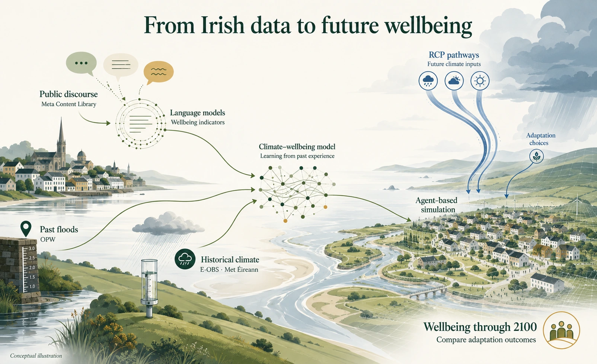

Data
Where the data come from
DigiÉire brings together four sources of data. Public discourse provides the evidence for extracting wellbeing indicators. Historical climate and flood records are linked with those indicators to build the climate–wellbeing model. RCP pathways provide climate-scenario inputs for agent-based simulations of adaptation and wellbeing through to 2100.

Past floods
Ireland’s flood records
Past flood records from the Office of Public Works (OPW) document flooding in Ireland, including where and when events occurred.
Use in DigiÉire: identify observed flood events and link them with climate conditions and wellbeing indicators to inform the flood–wellbeing model.
Public opinion
Meta Content Library
Flood-related public discourse in Ireland is obtained through the Meta Content Library (MCL). Language models analyse this material to extract indicators of distress, functional disruption and alienation.
Use in DigiÉire: develop the wellbeing measurement model and derive the wellbeing indicators used in flood–wellbeing analysis.
Historical climate
E-OBS and Met Éireann
Historical climate data for Ireland include precipitation from E-OBS and Met Éireann, together with records of storms affecting Ireland.
Use in DigiÉire: link past climate conditions and storm events with wellbeing indicators to build the climate–wellbeing model.
Future climate
RCP pathways
Representative Concentration Pathways (RCPs) define alternative future climate-forcing scenarios. Climate projections under these pathways provide inputs for exploring Ireland’s future flood risks.
Use in DigiÉire: drive long-run agent-based simulations through to 2100 and compare wellbeing outcomes under different climate pathways and adaptation choices.